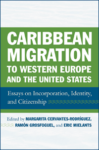

<body bgcolor="#FFFFFF" text="#000000" link="#0000FF" vlink="#CC0000" alink="#CC0000"><center><hr width="350" size="1" align="center" noshade>A novel and interdisciplinary volume on the dynamics of migration with comparative case studies of the Caribbean experience<hr width="350" size="1" align="center" noshade><p><a href="https://cdcshoppingcart.uchicago.edu/Cart/ChicagoBook.aspx?ISBN=9781592139545&&PRESS=temple" target="_top">Buy this book!</a> | <a href="https://cdcshoppingcart.uchicago.edu/Cart/Cart.aspx?PRESS=temple" target="_top">View Cart</a> | <a href="https://cdcshoppingcart.uchicago.edu/Cart/Cart.aspx?PRESS=temple" target="_top">Check Out</a></p><p></p></center><!--none//--><h1>Caribbean Migration to Western Europe and the United States</h1>
<H2>Essays on Incorporation, Identity, and Citizenship</H2>
<h3>edited by Margarita Cervantes-Rodriguez, Ramon Grosfoguel and Eric Mielants</h3>
<P>cloth 1-59213-954-X $65.50, Jan 09, <FONT COLOR=#990033>Available</FONT>
<br>Electronic Book 1-59213-956-6 $65.50 <FONT COLOR=#990033>Available</FONT>
<BR> 270 pp
6x9
11&nbsp;tables 2&nbsp;map(s) 1&nbsp;figure 8&nbsp;halftones
</P><P><I>Caribbean Migration to Western Europe and the United States</I> features a diverse group of scholars from across academic disciplines studying the transnational paths of Caribbean migration. How has the colonial path of the Caribbean influenced migration with regard to power relations, ethnic identities and transnational processes?</P>
<P>Through a series of case studies, the contributors to this volume examine the experiences of Caribbean immigrants to Spain, France, the United Kingdom and the Netherlands as well as the United States. They show the demographic, socioeconomic, political and cultural impact migrants have, as well as their role in the development of transnational social fields. <I>Caribbean Migration to Western Europe and the United States</I> also examines how contrasting discourses of democracy and racism, xenophobia and globalization shape issues pertaining to citizenship and identity.</P>
<P>Contributors: Elizabeth Aranda, Mary Chamberlain, Michel Giraud, Lisa Maya Knauer, John R. Logan, Monique Milia-Marie-Luce, Laura Oso Casas, Livio Sansone, Nina Glick Schiller, Charles (Wenquan) Zhang and the editors.</P>
<BR>&nbsp;<h2>Excerpt</h2><P>Excerpt available at <a href="http://www.temple.edu/tempress">www.temple.edu/tempress</a></p>
<BR>&nbsp;<h2>Reviews</h2>
<p><i>"[The editors] have assembled 10 insightful essays on the major diasporas... Most of the chapters are case studies written by recognized experts in the social sciences, particularly sociology, anthropology, and history.... [The editors] argue persuasively that migration from the independent and non-independent Caribbean differs significantly.... Together, the essays collected in this volume provide a kaleidoscopic view of Caribbean diasporas in their current or former metropole." </i> <br>&#151<b><i>The International Journal of Comparative Sociology</i></b>
<p><i>"It is rare for an edited collection to cohere from cover to cover. Readers will find a great diversity of voices challenging canonical discourses on assimilation, immigrant incorporation, and identity formation, all in one volume. The research reported in </i>Caribbean Migration<i> would have required an in-depth, multi-sited, multi-lingual, mixed-method comparative study. Scholars of migration will be grateful the three editors decided instead to compile these essays into a well-organized, interdisciplinary volume." </i><br>&#151<b><i>Contemporary Sociology</i></b>
<p><i>"There are several fine contributions here.... The editors make accurate observations on problems of nonsovereign territories in the region and of citizens from these places in the metropolis.... The book ends with an elegant chapter by Mary Chamberlain on the central place of kinship in West Indian transnational narratives." </i> <br>&#151<b><i>New West Indian Guide</i></b>
<p><i>"Originating in a 2002 conference in Paris, the volume boasts unusually broad geographical scope and careful theoretical framing. With case studies ranging from Cuba to Surinam as well as their metropolitan counterpoints from New York to Amsterdam, it is a genuinely Caribbean work (which is to say global). Conceptually, meanwhile, the essays reflect sensitivity to the predicament of former empires struggling to incorporate excolonial subjects of color, and to the savvy of migrants in creating institutions, practices, and ideas that outstretch the formal power of their Western host states.... [E]very essay delivers critical insight into the cultural politics of the human traffic between the region and its ex-imperial centers."</i> <br>&#151<b><i>Hispanic American Historical Review</i></b>
<p><i>"The volume succeeds in making an interdisciplinary contribution.... the collection contains enough informed scholarship to underwrite its overall value." </i> <br>&#151<b><i>Latin American Studies</i></b>
<p><i>"This volume is thorough and comprehensive…it is a valuable resource for students in the social sciences, sociology, and Caribbean studies." </i> <br>&#151<b><i>Multicultural Review</i></b>
<p><i>"Rather than focusing on a single origin and destination, this edited volume takes a comparative look at migration...[The contributors who] employ a variety of research methods and theoretical bases, all offer unique perspectives on the Caribbean migration experience.... [M]ost of the essays in this volume maintain a common theme revolving around the effects of colonial ties between sending and receiving societies, and the roles of transnationalism and public space in immigrant incorporation and identity formation, for both migrants abroad and non-migrants in the home country.... Additionally, the essays demonstrate that immigrants’ transnationalism and struggle for incorporation not only shape their own lives, but those of the receiving societies as well. The focus on transnationalism and colonial histories, then, gives the book a sense of continuity. Because of its interdisciplinary nature, this volume could inform a variety of studies on the macro forces and micro effects of migration, or supplement a postgraduate-level migration course." </i> <br>&#151<b><i>The Journal of Ethnic and Migration Studies</i></b>
<p><i>"This is a book that explores the significant movement from periphery to core.... [T]he distinctive nature of the volume lies not in the source of the migration, nor in the destination, but rather in the book’s focus on multiple of destinations in Europe and in the United States of America – in reality the main colonising nations of the Caribbean. By acknowledging the diversity of metropolitan phenomena encountered by the migrant and their placement in a socio-historical context, a unique opportunity is provided to acquire an insight into the Caribbean migrant experience in five different countries and thus compare and contrast the constants and variables the migrant encounters.... [A]n instructive and valuable addition to the library of migrant studies... [T]his is an important volume."</i> <br>&#151<b><i>The Bulletin of Latin American Research</i></b>
<p><i>"The editors should be commended for focusing on the broad nature of the Caribbean experience, and also for including chapters on migration to a host of countries, including the USA, Britain, France, Spain and the Netherlands.... [T]he book is recommended for anybody interested in work on post-war Caribbean migration from a sociological standpoint." </i> <br>&#151<b><i>The BASA (Black and Asian Studies Association) Newsletter</i></b>
<p><i>"</i>Caribbean Migration to Western Europe and the United States<i> is a unique and worthwhile book for three reasons. For one thing, it captures all of the contemporary circuits of Caribbean migration to metropolitan countries. Second, the volume addresses the different metropolitan, political, and economic processes that shape Caribbean migration. Third, it calls attention to the unfolding process of incorporation of Caribbean migrants in western Europe and the United States. This collection of articles is an important contribution to Caribbean and migration studies, particularly with respect to understanding the “coloniality of power” perspective....</i>Caribbean Migration to Western Europe and the United States<i> is helpful because it allows readers to better understand the complex ways in which Caribbean immigrants and their families in the United States and Europe have continued to survive and excel despite the hardships they have faced both at home and in the international diaspora." </i> <br>&#151<b><i>The Journal of American Ethnic History</i></b>
<BR>&nbsp;<h2>Contents</h2><P>
<p>Introduction: Caribbean Migrations to Western Europe and the United States
<br>1. Theorizing anout and beyond Transnational Processes
<p><b>Part I: State Policies and Migrants' Strategies</b>
<br>2. Colonial Racism, Ethnicity, and Citizenship: The Lessons of the Migration Experiences of French-Speaking Caribbean Populations
<br>3. From the Periphery to the Core: A case Study on the Migration and Incorporation of Recent Caribbean Immigrants in the Netherlands
<br>4. Puerto Ricans in the United States and French West Indian Immigrants in France
<p><b>Part II: Identities, Countercultures, and Ethnic Resilience</b>
<br>5. Puerto Rican Migration and Settlement in South Florida: Ethnic Identities and Transnational Spaces
<br>6. Racialized Culture and Translocal Counter-Publics: Rumba and Social Disorder in New York and Havana
<br>7. The Making of Suriland: The Binational Development of a Balck Community between Tropics and the Noth Sea
<p><b>Part III: Incorporation, Entrepreneurship, and Household Strategies</b>
<br>8. Cubans and Dominicans: Is There a Latino Experience in the United States?
<br>9. Dominican Women, Heads of Households in Spain
<br>10. Identity and Kinship: Caribbean Transnational Narratives
<p>About the Contributors
<br> index
</P><BR>&nbsp;<H2>About the Author(s)</H2>
<P><B>Margarita Cervantes-Rodríguez</B> is currently a visiting research scholar at the Center for Migration and Development at Princeton University. She is the author of <I>International Migration in Cuba: Accumulation, Imperial Designs and Transnational Social Fields</I>.</P>
<P><B>Ramón Grosfoguel</B> is Associate Professor in the Department of Ethnic Studies at the University of California-Berkeley and Senior Research Associate of the Maison des Sciences de l´Homme in Paris. His most recent book is <I>Colonial Subjects: Puerto Ricans in a Global Perspective</I>.</P>
<table><tr><td valign="top"><img src="/tempress/authors/2004_au3.gif" height="90" width="75"></td><td width="100%" valign="middle"><p><B>Eric Mielants</B> is Associate Professor in the Department of Sociology and Anthropology in the College of Arts and Sciences at Fairfield University. He is the author of <I><a href="1886_reg.html" target="_top">The Origins of Capitalism and the "Rise of the West"</a></i> (Temple).</P></td></tr></table>
<BR><H2>Subject Categories</H2>
<p><A HREF="/tempress/latin.html" TARGET="_top">Latin American/Caribbean Studies</a>
<BR><A HREF="/tempress/sociology.html" TARGET="_top">Sociology</a>
<BR><A HREF="/tempress/cultural.html" TARGET="_top">Cultural Studies</a>
</p>
<p align="center"><a href="https://cdcshoppingcart.uchicago.edu/Cart/ChicagoBook.aspx?ISBN=9781592139545&&PRESS=temple" target="_top">Buy this book!</a> | <a href="https://cdcshoppingcart.uchicago.edu/Cart/Cart.aspx?PRESS=temple" target="_top">View Cart</a> | <a href="https://cdcshoppingcart.uchicago.edu/Cart/Cart.aspx?PRESS=temple" target="_top">Check Out</a></p><p><font face="Arial" size="1"><a href="copyright.html" onMouseOver="window.status='Web Copyright Policy';return true;" onMouseOut="window.status=''" title="Web Copyright Policy">&copy;</a> 2015 <a href="http://www.temple.edu" target="new" onMouseOver="window.status='Link to Temple University home page';return true;" onMouseOut="window.status=''" title="Link to Temple University home page">Temple University</a>. All Rights Reserved. http://www.temple.edu/tempress/titles/2004_reg.html</font></p>